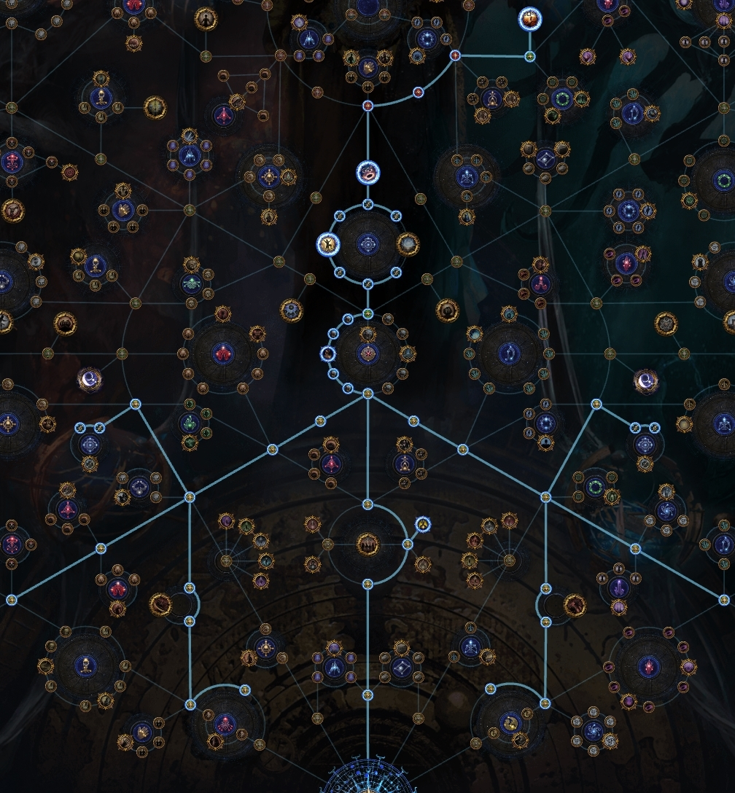

Scarab: Polished Legion Scarab (+1 legion) Polished Divination Scarab (+100% cards) Polished Reliquary scarab (+100% uniques) Polished Torment scarab (+5 torment spirits) Sextant: Your Maps contain an additional Legion Encounter Splinters and Emblems dropped by Legion Monsters in your Maps are duplicated Slaying Enemies close together can attract monsters from Beyond this realm 25% increased Magic Pack Size
Scarab: Polished Legion Scarab (+1 legion) Polished Reliquary scarab (+100% uniques) Polished Divination scarab (+100% cards) Polished Ambush scarab (+3,4,5,6 strongboxes) Sextant:
Scarab: Polished Legion Scarab (+1 legion) Polished Reliquary scarab (+100% uniques) Polished Divination scarab (+100% cards) Polished Ambush scarab (+3,4,5,6 strongboxes) Sextant:
Scarab: Polished Legion Scarab (+1 legion) Rusted Breach scarab (+1,2,3,4 breaches) ?Polished Reliquary scarab (+100% uniques) ?Polished Divination scarab (+100% cards) Sextant:
Агромоф. Первые 2 дня Основа - https://poeplanner.com/a/Ag3 Ритуалы + боксы - https://poeplanner.com/a/A49 Экспедиция - https://poeplanner.com/a/A4O Легионы + бричи - https://poeplanner.com/a/A4b Делириум - https://poeplanner.com/a/A41 харвест - https://poeplanner.com/a/A4F синдикат - https://poeplanner.com/a/A4k После 2 дней - бигус фарм легионы + бричи - https://poeplanner.com/a/A5w Фарм сплинтеров делириум миррор - https://poeplanner.com/a/ARR экспедиция надутая - https://poeplanner.com/a/ARs босс раш - https://poeplanner.com/a/AR2 Абисы - https://poeplanner.com/a/ARV конверт кванты + легионы + бейонды - https://poeplanner.com/a/A4r конверт кванты с вандерингом - https://poeplanner.com/a/A4w какой то мф с вандеринг пассом и конвертом. легионы + абис https://poeplanner.com/a/jO0